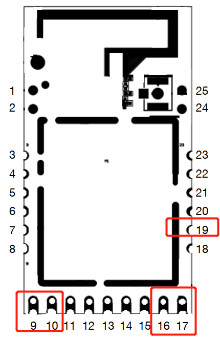
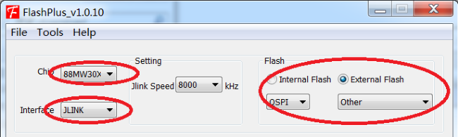
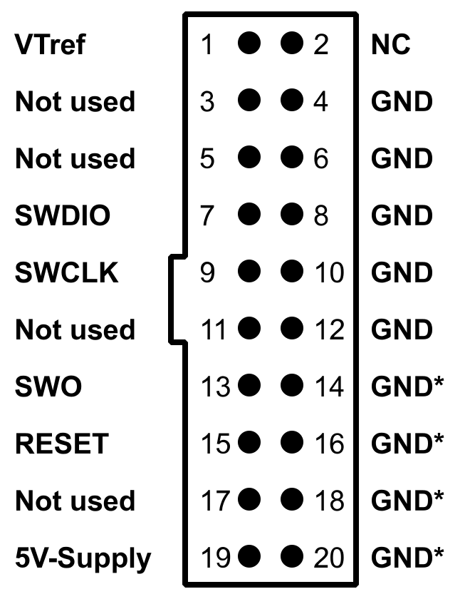

刷机
选择固件
在 项目主页与历史版本归档 下载对应型号的文件，并按同版本 SHA256SUMS 校验。
| 设备 |
支持的硬件 |
从斐讯原厂固件首次安装 |
已运行本项目固件后 OTA 升级 |
| TC1 智能排插 |
A1 硬件版本，EMW3031；不支持 A2 |
phicomm_tc1_a1.all.bin |
phicomm_tc1_a1.ota.bin |
| M1 空气检测仪 |
原装 EMW3080B / MK3080B，保留 ATSAMD20 |
优先参照下文保留 Bootloader 的流程；完整地址烧录用 phicomm_m1.all.bin |
phicomm_m1.ota.bin |
| A1 空气净化器 |
原装 EMW3080B / MK3080B |
phicomm_a1.all.bin |
phicomm_a1.ota.bin |
TC1 的 A1 硬件版本与 A1 空气净化器是两个产品。按下文所选方法准备首刷文件：完整地址烧录使用 .all.bin，M1 保留 Bootloader 流程使用专门准备的串口数据。网页升级使用 .ota.bin，不要上传 .all.bin 或 .usr.bin。
从斐讯原厂固件首次安装
拆机和连接下载器前断开市电、原电源及负载。烧录时仅使用独立、稳定的 3.3V 电源；不要让市电与电脑下载线同时连接，也不要把 5V 接到模块供电或信号引脚。完整镜像会覆盖原固件及部分设置，需要恢复原厂时应事先保存本机 Flash 备份，不能用其他设备的备份替代。
EMW3080B：M1 / A1 空气净化器，接线与完整地址烧录
M1 保留 Bootloader 的烧录方法见下一节。完整地址烧录会覆盖 Bootloader，请按所选方法准备对应文件。两种设备使用相同的模块烧录接口，但固件文件必须按产品选择。以下步骤适用于保留庆科 Bootloader、能进入串口下载模式的原装 EMW3080B，不适用于更换后的其他模块。
工具： 支持 3.3V 电平和 921600 波特率的 USB-TTL 转换器、独立 3.3V 电源、导线、焊接工具，以及支持 Ymodem 的串口软件（例如 SecureCRT）。
接线： 按模块引脚编号连接，TX/RX 交叉；不要把日志串口当作下载串口。
| EMW3080B 模块引脚 |
连接 |
| 16：VCC |
独立电源 3.3V |
| 17：GND |
电源负极和 USB-TTL GND，共地 |
| 9：用户 UART TX |
USB-TTL RX |
| 10：用户 UART RX |
USB-TTL TX |
| 19：BOOT |
进入下载模式时接 GND，完成后解除 |

查看庆科官网引脚图（原图）。编号方向以该图为准，勿把模块翻面后直接照搬左右位置。
- 拆机并确认模块标识。M1 保留原传感器控制器；烧录期间若主板也在驱动模块 RX，应隔离该串口的另一端输出，避免两个 TX 同时驱动一根线。A1 烧录时断开原电源和风机连接。
- 断电接线，将 BOOT（19）拉低。打开串口软件，选转换器对应的 COM 口，设置 921600、8N1、无流控，再给模块上电。看到 Bootloader 命令提示后继续；没有提示时先检查供电、共地、TX/RX 和 BOOT，不要盲目发送烧录命令。
- 使用对应的
.all.bin。本方法要求文件长度不超过 0x160000 字节；超出时停止，不自行扩大擦除范围。在提示符下输入：
text
4 -dev 1 -start 0x0 -end 0x160000
- 回车后，在 SecureCRT 的 Transfer → Send Ymodem 中选择该
.all.bin，等待传输和 Flash 写入完成。不要中途断电。
- 断开供电，解除 BOOT 接地并移除下载线。恢复原接线、装回外壳后正常上电，连接配网热点并配置 Wi-Fi。
传输失败但 Bootloader 仍可进入时，检查接线和串口设置后重新发送完整镜像。如果 Bootloader 已损坏或无法进入，参照庆科官方文档的 Imagetool 模式恢复，不要把本节用户串口接线直接用于日志串口下载。
接线、命令与 Ymodem 流程来源：庆科 EMW3080 系列模组固件烧录方法。该页面也提供 Imagetool 工具与恢复接线说明。
M1：保留原 Bootloader 的 YMODEM 首刷
适用于原装 EMW3080B M1，要求能够进入庆科 Bootloader，且命令菜单和分区布局与下文一致。A1 空气净化器请使用其对应固件与烧录方法。
1. 串口与分区确认
按上节接线与供电要求进入 Bootloader。选择 USB-TTL 对应的串口，设置 921600、8N1、无软硬件流控。输入 ? 确认菜单：
1:FWUPDATE Update MiCO
2:USERUPDATE Update user APP
5:MEMORYMAP
6:BOOT
输入 5，核对以下关键分区。地址是 Flash 偏移，不是 CPU 映射地址：
| ID |
分区 |
起始地址 |
长度 |
| 2 |
Bootloader |
0x00000000 |
0x00013000 |
| 3 |
MiCO Kernel |
0x00013000 |
0x000b5000 |
| 6 |
User Application |
0x00088000 |
0x00040000 |
| 7 |
PARAMETER1 |
0x000c8000 |
0x00004000 |
| 8 |
参数备份（菜单同样显示 PARAMETER1） |
0x000cc000 |
0x00004000 |
MiCO 区域包含用户应用，应用相对 MiCO 起点的偏移为 0x75000。若菜单或布局不同，停止本流程。本方法不写 Bootloader、参数、ATE、OTA Storage 和 USER Storage；但覆盖内核或应用仍会替换原固件，不能以保留这些区域代替原厂备份。
2. 准备正确的文件
下载同一版本的 M1 固件与 SHA256SUMS，校验所用文件。不要将 .all.bin 发送给 1 或 2，也不要将未经转换的 .ota.bin 发送给 2。 .all.bin 含 Bootloader 等区域，只用于上一节指定的地址烧录流程。
本项目当前 M1 .ota.bin 的结构为：内核及填充 0x75000 字节 + 用户应用 + 末尾 16 字节 MD5。串口 FWUPDATE 使用去掉 MD5 尾部后的连续内核与应用数据；USERUPDATE 使用带 8 字节长度/CRC 头的 .usr.bin。若 Release 未单独提供 .usr.bin，可从校验通过的 .ota.bin 提取。下面在固件所在目录运行，检查长度、MD5、应用魔数、ABI 和 CRC 后才生成两个串口文件；适用于这里说明的镜像格式：
python3 - <<'PY'
from pathlib import Path
import binascii
import hashlib
import struct
image = Path('phicomm_m1.ota.bin').read_bytes()
offset = 0x75000
assert offset + 144 <= len(image) <= offset + 0x40000 + 16, '镜像长度异常'
assert hashlib.md5(image[:-16]).digest() == image[-16:], 'OTA MD5 不符'
length, reserved, crc, magic, stack, abi = struct.unpack_from('<IHHIII', image, offset)
assert 120 <= length <= 0x40000 - 8, '应用长度异常'
assert len(image) == offset + 8 + length + 16, '应用边界异常'
assert magic == 0xc89346 and abi == 3, '应用魔数或 ABI 不符'
user = image[offset:-16]
assert reserved == crc == binascii.crc_hqx(user[8:], 0), '应用 CRC 不符'
assert b'PHICOMM_M1_EMW3080\0' in user, '非 M1 镜像'
Path('m1-fw.serial.bin').write_bytes(image[:-16])
Path('m1-user.serial.bin').write_bytes(user)
print('内核+应用:', len(image) - 16, 'bytes')
print('用户应用:', len(user), 'bytes; SHA256:', hashlib.sha256(user).hexdigest())
PY
生成后记录脚本输出的文件长度，发送完成时核对设备显示的 Size。文件长度与校验值随固件变化，请使用所下载文件的实际结果。
3. 发送与回读
- 在
MXCHIP> 输入 1 并回车，等待 Waiting for the file to be sent / C，使用 YMODEM（CRC、1 KiB 数据包）发送 m1-fw.serial.bin。建议使用支持包间隔的发送工具，将数据包间隔设为 50 ms。写入是否正确仍需通过回读校验确认。
- 等待设备打印
Successfully!，核对 Size。该提示只代表 Bootloader 报告接收/写入完成，不能据此宣布应用可启动。
- 输入
2 -r，使用串口工具的 Receive YMODEM 接收用户分区，保存为 USER.bin。回读文件应为整个 0x40000 分区，即 262144 bytes。Linux 脚本需要独占串口时，先用 Ctrl-A、Q 退出 minicom，再运行脚本；不要让两个程序同时读写同一端口。
- 将回读文件前
m1-user.serial.bin 长度的内容与期望应用逐字节比较，同时验证应用 CRC：
```sh
python3 - <<'PY'
from pathlib import Path
import binascii
import hashlib
import struct
expected = Path('m1-user.serial.bin').read_bytes()
readback = Path('USER.bin').read_bytes()
assert len(readback) == 0x40000, '用户分区回读长度不符'
actual = readback[:len(expected)]
assert actual == expected, '应用回读不一致，不要启动；重新写入并回读'
length, reserved, crc = struct.unpack_from('<IHH', actual)
assert length + 8 == len(actual), '应用长度不符'
assert reserved == crc == binascii.crc_hqx(actual[8:], 0), '应用 CRC 不符'
print('应用逐字节一致，CRC 通过，SHA256:', hashlib.sha256(actual).hexdigest())
PY
```
- 确认回读一致后输入
6 启动。正常断电重启前解除 BOOT 接地，按上节要求恢复原接线。
4. user firmware invalid [-3] 恢复
user firmware invalid [-3] 表示用户应用 CRC 校验失败。按以下步骤恢复：
- 进入 Bootloader，核对固件校验和，并重新准备同一固件的应用文件。
- 输入
2，通过 YMODEM 发送 m1-user.serial.bin；也可使用已与提取结果核对一致的 phicomm_m1.usr.bin。设置数据包间隔为 50 ms。
- 等待
Successfully!，再执行 2 -r，按照上文脚本比较回读内容。
- 回读不一致时，检查供电、共地、导线、串口占用及 USB-TTL 转换器，排除问题后重新写入。保持 Bootloader 和参数分区，不要通过整片擦除来试错。
- 回读与应用文件完全一致后，输入
6 启动。
5. 如何判断应用确实运行
Booting....... 表示 Bootloader 正在启动应用。应用运行后，用户串口使用 115200、8N1、无流控；保持 921600 会看到乱码。切换至 115200 后，可在串口工具的十六进制显示模式下查看每约 5 秒发送的 12 字节传感器查询帧：
23 01 00 00 00 00 00 00 00 00 00 21
看到周期性查询帧说明应用正在运行。解除 BOOT 接地并恢复原接线后，连接 M1-AP-<MAC后六位> 热点，访问 http://192.168.0.1/ 完成配网；随后检查网页中的传感器读数。需要 MQTT 时，再填写 Broker 并检查连接状态。
EMW3031：TC1（A1 硬件版本），J-Link 烧录
工具： Windows 电脑、支持 SWD 的 J-Link、SEGGER J-Link 驱动、FlashPlus、独立 3.3V 电源、导线、合适的螺丝刀和焊接工具。
FlashPlus 使用 Marvell 的 EMW3031 烧录配置。可从Wiki 下载 FlashPlus v1.0.10；EMW3031 / FlashPlus 工具说明镜像包含工具配置与 Flash 布局。

安装包可按资源校验和校验；图片及工具来源见资源来源。
拆机： 拆开底部防水垫，拧下螺丝；轻敲底下中部，直到外壳脱开。取出电路板后确认模块为 EMW3031。接线时按主板丝印和模块引脚核对，不按线的颜色判断。
| EMW3031 模块引脚 / 主板信号 |
J-Link 标准 20 针接口 |
| 16：3V3 |
接独立 3.3V 电源，并连接 1：VTref |
| 17：GND |
4：GND，并与电源负极共地 |
| 1 或 3：SWD_CLK / CLK |
9：SWCLK |
| 2 或 4：SWD_DIO / DIO |
7：SWDIO |
| 11：RESET（需要复位连接时） |
15：nRESET |
模块位置见庆科 EMW3031 数据手册，PDF 第 8 页引脚图（镜像）；下载器点位见 SEGGER 官方 SWD 配图和接口说明。

VTref 是电压检测输入，不是 3.3V 电源输出。 标准 J-Link 的 19 针输出为 5V，不连接模块。小型下载器的排针布局可能不同，应按其说明中的 SWCLK、SWDIO、GND、VTref 信号对应连接。
- 断开排插市电，接好下载线和独立 3.3V 电源，连接 J-Link 到电脑，打开 FlashPlus。
- 设置 Chip = 88MW30X、Interface = JLINK；Flash 选 External Flash，接口选 QSPI，Type 选 Other。
- 首先选择 READ，Flash address 填
0，Length of byte 填 200000（界面为十六进制，即 2 MiB），选择 Save to file，保存本机完整 Flash。读取失败或文件不是 2,097,152 字节时先排查，不开始擦写。备份含本机参数，应自行保管。
- 选择 PROGRAM，Flash Start Address 填
0；文件选择 phicomm_tc1_a1.all.bin。Erase Mode 选择 Erase flash sectors by file，不要选择 Erase all flash；勾选 Verify after programming。
- 当前完整镜像应结束于
0x1E0000 之前；若文件长度超过这个边界，停止并核对对应版本的布局。点击 Start，等待写入完成且校验成功后再断电、拆除下载线。不要自行把源码 CPU 地址填入 Flash Start Address。
- 装回外壳后正常上电，连接
TC1-AP-<MAC后六位>，访问 http://192.168.0.1/ 配网。
无法识别芯片时，检查 3.3V、VTref、共地、CLK/DIO 和驱动；可以降低 J-Link 速度后重试。写入或校验失败时保持市电断开，修复接线后重新烧录。恢复原厂可使用同一台设备的完整备份，从 Flash 地址 0 写回并校验；没有本机备份时不要整片擦除或写入他人的设备参数。
从本项目固件 OTA 升级
仅已经运行本项目固件的设备支持以下 OTA 流程。斐讯原厂固件或其他第三方固件须先完成上述首刷，不能直接套用本项目的 OTA 升级步骤。
- 打开 Releases，下载本型号的
.ota.bin.signed（签名 OTA 包），核对型号和校验和。
- 访问设备网页，在固件升级 / OTA 页面选择该文件并上传，等待写入和自动重启；过程中保持供电。升级后重新访问网页确认版本。
首次配网入口统一如下；已经接入家庭 Wi-Fi 时，通过路由器查询设备 DHCP 地址访问网页。旧版本的配网地址可能不同，下载时请核对所选 Release 的版本说明；本表适用于已统一地址的固件。
| 设备 |
首次连接的热点 |
配网页面 |
| TC1（A1 硬件版本） |
TC1-AP-<MAC后六位> |
http://192.168.0.1/ |
| M1 |
M1-AP-<MAC后六位> |
http://192.168.0.1/ |
| A1 空气净化器 |
A1-AP-<MAC后六位> |
http://192.168.0.1/ |
OTA 失败但网页仍可访问时，检查文件和网络后重试；设备无法启动时，按对应模块的下载器恢复方法处理。OTA 不需要拆机。